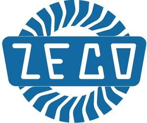

Trade Mark Journal No.2025/019 9 May 2025
WO0000001837991 (7,9,11,37,42)
Office of origin: Italy
Date of International Registration:22 August 2024
Date of designation in the UK:
22 August 2024

The mark contains the colours white and blue.
International priority date claimed: 13 May 2024
(Italy)
(302024000077611)
- Class 7
- Turbine shafts [parts of machines]; generators for wind turbines; hydraulic turbines; inlet systems for gas turbines; blades for aircraft turbines; gas turbine engines; gas turbine engines for air vehicles; gas turbine engines for sea vehicles; turbine vanes, other than parts of land vehicle engines; turbine vanes being parts of gas turbine engines; turbine blades for power generation; turbine blades treated with alloys; vertical turbine pumps; gas turbines; gas turbines not for land vehicles; ram air turbines [other than for land vehicles]; steam turbines [other than for land vehicles]; suction turbines [other than for land vehicles]; turbines, other than for land vehicles; wind turbines; turbines for power generation; turbo-generators; turbocompressors; turbochargers for machines; turbochargers for motors; impellers for turbo-superchargers; turbo-superchargers for vehicle engines; turbosuperchargers for land vehicle engines; turboprop engines [not for land vehicles]; precision machines for producing parts for turbojets; stators [parts of machines]; electrical generator stations; solar power generators; current generators; mobile electrical power generators; uninterruptible power supplies [machines] for the generation of electrical energy; internal combustion engines for power generation, other than for land vehicles; drills being cordless electric power tools; waterjet cutting machines; machines for use in the processing of water; electric water pumps; water pumps for use in motors and engines; engine driven water pumps; wave-making pumps for aquariums; feedwater regulators; water heaters [parts of machines]; water separators; water separators [machines]; rotary nozzles for use with high pressure water washing machines; hydro-pneumatic accumulators; hydrocyclones; trench cutters; hydroelectric installations for generating electricity; hydrostatic drives; rotary to linear actuators; electrical rotary converters; rotary milling cutters [machines]; rotary milling cutters [parts of machines]; rotary index machines; rotating electrical machines; rotary trimming machines; electric rotary hammers; rotary grinding machines; volumetric rotating gear pumps; rotary dies [machines]; rotary dies [parts of machines]; rotary tools [machines]; rotary metal cutting tools [machines]; rotary metal cutting tools [parts of machines]; fluid separation machines; fluid dispensing machines for industrial use; fluid pumping installations; valves [mechanical] for regulating fluid flow; discharge screws for hydraulic fluids [parts of machines]; pump impellers; alternators; electric alternators for land vehicles; electric alternators for water vehicles; reversible flow filters [parts of machines]; direct current generator brushes [parts of machines]; hydraulically operated switches; hoses (non-metallic -) for transferring hydraulic power in machines; hoses (metal -) for transferring hydraulic power in machines; fluid couplings being parts of machines; hydraulic accumulators; hydraulic accumulators being parts of machines; hydraulic lifts; battering ram [hydraulic]; hydraulic rams; hydraulic valve actuators; hydraulic gate operators; pneumatic or hydraulic linear actuators, other than for land vehicles; hydraulic actuators; buckets for use with hydraulic lifting machines; stands for hydraulic jacks; jaws of life [powered rescue shears]; hydraulic shears [for emergency and rescue]; hydraulic wrenches for use on drilling rigs; hydraulic torque wrenches; hydraulic circuits for machines; hydrodynamic screws; hydraulic controls for machines, motors and engines; hydraulic controls for machines; hydraulic controls for motors; hydraulic torque converters [machine elements not for land vehicles]; industrial process controllers [hydraulic]; process control instruments [hydraulic]; door closers, hydraulic; door openers, hydraulic; hydraulic door openers and closers [parts of machines]; window openers, hydraulic; window closers, hydraulic; hydraulic spreader [for emergency and rescue]; hydraulic excavators; hydraulic extension rams [for emergency and rescue]; couplings of metal for hydraulic apparatus; tube conveyors, hydraulic; hydraulic intensifiers being parts of machines; swaging machines for use in the assembly of hydraulic hoses; swaging machines for use in the preparation of hydraulic hoses; hydraulic hammers; hydraulic jacks; trailer mounted hydraulic jacks; hydraulic lifting gear; hydraulic engines and motors; rotary hydraulic motors [other than for land vehicles]; hydraulic motors for excavators; hydraulic hoists; mobile aerial work platforms [hydraulic]; self-propelled hydraulic platforms; mobile platforms [hydraulic]; hydraulic pliers (parts of constructing machines); hydraulic pumps; servo-controlled hydraulic pumps; oil hydraulic presses [for metalworking]; hydraulic presses [for metalworking]; hydraulic lifting ramps; gear boxes for hydraulic transmissions [other than for land vehicles]; excavators for hydraulic expansion machines; hydraulic wire saws; mechanical and hydraulic lifts; frames being parts of hydraulic elevators; water swivels [hydraulic couplings]; hydraulic transmissions, other than for land vehicles; hydraulic conveyors; hoses (metal -) for use in hydraulic systems in machines; hoses (non-metallic -) for use in hydraulic systems in machines; process control units [hydraulic]; hydraulic tools; hydraulically operated butterfly valves; valves operated automatically by hydraulic control; hydraulic valves [parts of machines]; hydraulic valves; hydraulically driven winches for marine use; pulleys; mechanical tools; hand-held tools, other than hand-operated; portable electric power generators; electric power generators for ships; generating plant; pump installations; vacuum pump installations; power installations [generators]; barrels for use with drilling rigs; drilling rigs; sifting installations; rotary cutting installations [machines]; electric motors for heating installations; pressure regulators for lubricating installations; water supply machines [pumps]; metal finishing plant [machines]; milling machines [for metalworking]; heat insulated metal piping elements [parts of machines]; wiremesh cutters [machines]; metal cutters (gas operated -); tubing mills [for metalworking]; hacksaw blades for machines; rolling mills [for metalworking]; honing machines for metalworking; broaching machines [for metalworking]; drilling machines [for metalworking]; honing machines for metalworking; lapping machines [for metalworking]; metal cutting machines; continuous metal casting machines; metal forming machines; metalworking machines; butt welding machines for wire [gas-operated]; machines for machining metals; metal sawing machines; wire cut machines; bending machines for metalworking; uncoiling machines for sheet metal; sheet metal flattening machines; cutting machines [for metalworking]; metalworking machine tools; wire mesh conveyor belts; conveyor belts made of wire; perforating machines [for metalworking]; planing machines [for metalworking]; plates for the sintering of powdered metals; toolholders for metalworking machines (machine parts); mechanical presses [for metalworking]; metal extrusion presses; metal forming presses; metal stamping presses; punching presses [for metalworking]; robot metal working presses; metal pulleys being parts of machines; tool bits for metalworking machines; metal loading ramps [machines]; grinding machines [for metalworking]; industrial robots for working metal; rolling machines for rolling metals; shaping machines [for metalworking]; metal welding machines [gas]; metal welding machines [electric]; wire brushes for use in machines; wire wheels for power-operated grinders; wire brushes [parts of machines]; press dies for metal forming; moulds for forging metal products [parts of machines]; slotting machines [for metalworking]; cylinder heads made of castings of light metal alloys [parts of machines]; lathes [for metalworking]; shearing machines [for metalworking]; metal branching pipes [parts of engines]; pre-insulated bonded metal pipes [fitted parts of machines]; pre-insulated bonded pipes (non-metallic -) [parts of machines]; diamond-pointed metal-cutting tools; metal cutting tools [gas-operated]; metal cutting tools [machines]; metal cutting tools [parts of machines]; butterfly valves (non-metallic -) being parts of machines; check valves (non-metallic -) [parts of machines]; braking components for machines; frictional drive components for machines; machine transmission components, except for land vehicles; machine coupling and transmission components, except for land vehicles, and parts therefor; hangers for internal combustion engines [parts of internal combustion engines]; stamping machines for pressing out components from sheet materials; machines for the assembly of semiconductor components; machines for the preparation of surfaces for electrical and electronic components; electric motors, and their parts, not for land vehicles; punching presses for the final punching of parts; rollers being components of packaging lines [machines]; valves [parts of machines]; mechanical and pneumatic hoisting apparatus; mechanical lifts; reeling apparatus, mechanical; reels, mechanical, for flexible hoses; shovels, mechanical; mechanical seals [machine parts]; kneading machines; mechanical mixing machines; mechanical shovels [machines]; mechanical hoists; access platforms [mechanical]; mechanical spreaders; road sweeping machines, self-propelled; process control instruments [mechanical]; system control instruments (mechanical -); process control units [mechanical]; mechanical stamping tools [parts for machines]; cutting grids being tools for cutting machines; speed governors for motors and engines; speed governors for machines; speed governors for machines, engines and motors; speed governors [mechanical] for machines, engines and motors; actuators for valves; actuators for dampers; actuators incorporating a gear mechanism for pipeline valves; pneumatic valve actuators; pneumatic actuators for control valves; pressure controllers [valves] being parts of machines; valve assemblies of metal [parts of machines]; valve closure mechanisms; regulators [parts of machines]; cocks [valves] of metal parts of machines; valves; slide valves [parts of machines]; valve diaphragms; butterfly valves of metal being parts of machines; butterfly valves being parts of machines; ball valves being parts of machines; spray valves [parts of machines]; angle valves being parts of machines; plunger type valves for use with tanks; power operated valves; shutter valves; valves operated automatically by pneumatic control; pneumatically operable valves; fuel valves; stop valves of metal [parts of machines]; stop valves of plastic [parts of machines]; stop valves [parts of machines]; suction valves for air compressors; suction valves for gas compressors; compressed air switch valves; vacuum control valves [parts of engines]; vacuum control valves [parts of machines]; pump control valves; dispensing valves being machine parts; clack valves [parts of machines]; unloading check valves for the outlets of air compressors; non-return valves of metal [parts of machines]; pressure valves [parts of machines]; automatic inlet control valves for reciprocating air compressors; temperature control valves [parts of machines]; level regulating valves [parts of machines]; thermostatic control valves for machines; exhaust gas recirculation [EGR] valves for motors and engines; pressure reducers [parts of machines]; non-return valves of plastic [parts of machines]; waste gas return valves [parts of machines]; metal safety valves [parts of machines]; safety valves [parts of machines]; tapping valves for metallurgical purposes; positive crankcase ventilation [PCV] valves for motors and engines; dosing valves [parts of machines]; power valve for carburetors [vehicle parts]; valves operated by changes in pressure; manually operated ceramic valves being parts of machines; lockable valves [parts of machines]; sludge cocks [valves] being parts of machines; sludge valves being parts of machines; valves for pumps; servo-control valves; compressed air pilot valves; digital electro-hydraulic proportioning valves; pressure pipes of metal [parts of machines]; air ducting for jet engines; waste gas conduits [parts of machines].
- Class 9
- Cyrogenic turbine meters; turbine meters; accumulators for photovoltaic power; electric power analyzers; apparatus and instruments for accumulating and storing electricity; apparatus and instruments for switching electricity; apparatus and instruments for transforming electricity; electricity storage apparatus; energy control devices; energy regulators; electric power controllers; sonars; hydrometers; rotary encoders; rotary converters; ultrasonic fluid measuring apparatus; alternator rectifiers; flowmeters; mass flow meters; electric flow meters; gas flow meters; flow control installations [electric]; luminoflux meters; particle flow monitors; gas flow monitors; magnetic flux sensors; workflow software; workflow management system software; laminar flow hoods for laboratory use; hydraulic system testing units; mechanical engineering software; apparatus for monitoring electrical energy consumption; apparatus and instruments for accumulating electricity; apparatus and instruments for regulating electricity; photovoltaic apparatus for converting solar radiation to electrical energy; electrical power distribution blocks; solar cells for electricity generation; solar energy collectors for electricity generation; converters, electric; optical fibres [light conducting filaments]; solar panels for the production of electricity; voltage regulators for electric power; switchgear [electric]; photovoltaic installations for generating electricity [photovoltaic power plants]; photovoltaic apparatus and installations for generating solar electricity; wireless controllers to remotely monitor and control the function and status of security systems; metallic cables [electric]; wires (electric -) of metal alloys; metallic wires [electric]; fuse wire; metal hardness testing machines; metal compression testing machines; magnetic metal detector monitors; aerials; instruments for testing metals; antennas and aerials as components; computer component testing and calibrating equipment; electrical and electronic components; software for operating and managing integrated circuit components; data processing equipment and accessories (electrical and mechanical); mechanical signs; electric control panels; electrical control boards; distribution boards [electricity]; connection boards [electric]; contact boards (electric -); control panels [electricity]; panels for the distribution of electricity; electronic cruise control apparatus; speed regulators for record players; cruise controls for motor vehicles; tube amplifiers; vacuum tube characteristic testers; valve operators [electric controls]; switchboxes [electricity]; pressure indicator plugs for valves; thermostatically controlled valves; vacuum tubes [radio]; amplifying tubes; solenoid valves [electromagnetic switches]; valves (electric controls for automatically operating -); valves (electronic controls for automatically operating -); ion gauge tubes; electric control valves; electric valves [thermionic]; thermionic valves; photo-sensitive tubes; valves for inflating lifejackets; valves (remote controls for automatically operating -); thermionic valves for radio; ducts [electricity]; metal ducts [electric]; ducting for electric cables; electricity conduits; conduit couplings [electric]; materials for electricity mains [wires, cables]; apparatus and instruments for conducting electricity.
- Class 11
- Turbine ventilators [ventilation apparatus]; heat pumps for energy processing; thermal storage instruments [solar energy] for heating; regulating and safety accessories for water and gas installations; terminal water supply fittings; water control valves; water regulating apparatus; regulatory fittings for water pipes; filter-motor combinations for aquariums; stop valves for regulating water; apparatus for controlling water supply; water regulating valves [regulating accessories]; water regulating valves [safety accessories]; water pressure reducers [regulating accessories]; water pressure reducers [safety accessories]; regulating apparatus being parts for water apparatus; pressure controllers [regulators] for water pipes; water control valves [level controlling] in cisterns; stop valves being safety apparatus for water apparatus; pressure relief valves [safety apparatus] for water pipes; pressure supervision apparatus [safety apparatus for water pipes]; gravimetric dry flow feeders for water treatment; airstream generating apparatus; dryers for the face using warm air; flow restrictors for reverse osmosis water purification units; installations for controlling the flow of gases; dryers for the hands using a warm air drying stream; taps for the control of water flow; taps for regulating gas flow; taps for regulating water flow; valves [plumbing fittings]; aerators for faucets [plumbing fittings]; regulating apparatus for water apparatus; spouts [plumbing fittings]; shower sprayers [plumbing fittings]; sink strainers [plumbing fittings]; faucet filters [plumbing fittings]; bibcocks [plumbing fittings]; shower control valves [plumbing fittings]; tub control valves [plumbing fittings]; manually-operated plumbing valves; electrically energized flask heaters for use in laboratories; flues and installations for conveying exhaust gases; water conduits installations; valves being parts of sprinkler systems; sanitary installations, water supply and sanitation equipment; installations for the burning off of liquids; heating installations for industrial use; filter apparatus for water supply installations; regulating apparatus for gas installations; valves [faucets] being parts for sanitary installations; air valves for steam heating installations; regulating apparatus for gas pipe installations; pressure relief apparatus for use with gas installations; pressure supervision apparatus [safety apparatus for water apparatus]; temperature control valves [parts of water supply installations]; pressure relief apparatus forming part of water supply systems; filter elements for the overflows of water supply tanks; filter elements for the air vents of water supply tanks; bath installations; installations for airing; water-saving aerators for faucets; safety fittings for water pipes; bathroom installations for water supply purposes; pressure water tanks; pressure relief valves [safety apparatus] for water apparatus; safety valves for water apparatus; safety valves for water pipes; heating apparatus for use in the treatment of metal; launders for trapping impurities in molten metal; furnaces for decontaminating metals; vacuum furnaces for precious metals; furnaces for recovering metals; flexible strip wound pipes of metal [parts of sanitary installations]; automatic hardening furnaces for components; grates; ventilation grilles being parts of extractor fans; electric broilers; apparatus for controlling temperature in central heating radiators [valves]; temperature responsive control apparatus [thermostatic valves] for central heating radiators; temperature sensing apparatus [thermostatic valves] for central heating radiators; valves (solenoid controls for automatically operating -) [parts of heating installations]; valves (temperature sensitive controls for automatically operating -) [parts of heating installations]; control devices [thermostatic valves] for heating installations; heat regulating devices [valves] being parts of heating installations; temperature sensitive switches [thermostatic valves] for central heating radiators; temperature limiters [valves] for central heating radiators; temperature limiters for central heating radiators [thermostatic valves] incorporating bi-metallic discs; temperature limiters for central heating radiators [thermostatic valves] incorporating expansion rods; mechanisms for controlling fluid level in tanks [valves]; automatic temperature regulators [valves] for central heating radiators; temperature regulators [thermostatic valves] for central heating radiators; control units [thermostatic valves] for heating installations; ball cocks for toilet tanks; float valves [ball cocks]; ball valves; steam valves; valves being part of sanitary installations; valves as part of radiators; stop valves being safety apparatus for gas apparatus; stop valves for regulating gas; valves (level controlling -) being parts for sanitary installations; temperature control valves [parts of central heating radiators]; radiator valves; water control valves for faucets; level control valves; water control valves for water cisterns; control valves (thermostatic -) for central heating radiators; pressure relief valves [safety apparatus] for gas apparatus; pressure relief valves [safety apparatus] for gas pipes; safety valves for gas apparatus; safety valves for gas pipes; dampers for furnaces; dampers for ventilating installations; mixing valves being part of sanitary installations; shower mixing valves; mixing valves [faucets]; mixing valves [faucets] for sinks; mixing valves [faucets] for basins; valves for air conditioners; temperature control valves [parts of central heating installations]; level controlling valves in tanks; thermostatic valves; thermostatic valves [parts of heating installations]; radiator valves [thermostatic]; regulating accessories for water or gas apparatus and pipes; regulating and safety accessories for gas pipes; regulating accessories for gas pipes and lines; safety accessories for water or gas apparatus and pipes; pressure supervision apparatus [safety apparatus for gas pipes]; flues for ventilating apparatus; sanitary drain armatures for drip pipelines; strainers for water lines; sanitary water conduit fittings; mixer taps for water pipes; taps for pipes and pipelines; taps for water pipes; pipe laying cocks; temperature monitors [valves] for central heating radiators.
- Class 37
- Maintenance and repair of gas turbines; repair of turbines; repair services for electric generators and wind turbines; construction of geothermal energy installations; power infrastructure construction; installation of reactive power compensation apparatus; installation of power generating apparatus; installation of electric light and power systems; installation of electrical machinery and generators; installation of solar powered systems; installation of wind power systems; installation of hydropower systems; maintenance of power generating apparatus and installations; maintenance and repair of solar power installations; maintenance and repair of solar heating installations; maintenance, servicing and repair of power generating apparatus and installations; servicing of power generating apparatus and installations; charging of batteries and power storage devices, and rental of equipment therefore; repair of power generating apparatus and installations; repair of energy production plants and machines; repair of energy supply installations; maintenance and repair of energy generating installations; providing information relating to the repair or maintenance of water purifying apparatus; construction and maintenance services relating to water irrigation; civil engineering maintenance involving the use of pressurised jets of abrasive-containing water; civil engineering maintenance involving the use of water-jet cutting equipment; repair or maintenance of water purifying apparatus; repair of water purifying apparatus; repair of water supply apparatus; repair of water supply installations; hydro-electric factory construction; civil engineering maintainance involving the use of hydromechanical cutting equipment; maintenance and repair of systems incorporating hoses which convey fluid; fluid pumping services; hydraulic construction services; hydraulic fracturing services; plumbing and gas and water installation; advice relating to preventing blockages in plumbing lines; installation of hydraulic equipment; installation of plumbing; installation of plumbing systems; plumbing installation, maintenance and repair; beneath ground construction work relating to plumbing; pipe installation services; maintenance of plumbing; rental of plumbing apparatus; renovation of plumbing; refurbishment of clutches for hydraulic trucks; advisory services relating to the installation of plumbing; advisory services relating to the maintenance of plumbing; advisory services relating to the repair of plumbing; plumbing installation advisory services; plumbing maintenance advisory services; plumbing repair advisory services; advisory services relating to the installation of hydraulic equipment; plumbing and glazing services; mechanical cleaning of waterways; erecting manufacturing plants; construction of geothermal heating installations; construction of water supply installations; construction of oil and gas storage installations; plant construction; plant refurbishment; construction of industrial plants; renovation of electrical wiring; installation of geothermal installations; installation of fittings for buildings; installation and maintenance of photovoltaic installations; maintenance and repair of electronic installations; maintenance and repair of geothermal installations; installation and maintenance of irrigation systems; repair of electrical equipment and electrotechnical installations; maintenance and repair of security installations; cleaning of water supply plumbing; assembling [installation] of machine plant; advisory services relating to the maintenance of fixings; maintenance, repair and reconditioning of photovoltaic apparatus and installations; maintenance and repair of gas and electricity installations; coating services for the maintenance of industrial engineering plant; coating services for the maintenance of marine engineering plant; coating services for the repair of industrial engineering plant; coating services for the repair of marine engineering plant; providing information relating to the repair or maintenance of chemical plants; hvac (heating, ventilation and air conditioning) installation, maintenance and repair; heating equipment installation and repair; water supply installations maintenance; repair of water pollution control equipment; installation of water pipes; beneath ground construction work relating to water supply mains; beneath ground construction work relating to water supply pipes; underwater abrasive cleaning of metallic surfaces; underwater abrasive cleaning of non-metallic surfaces; abrasive cleaning of metallic surfaces; abrasive cleaning of non-metallic surfaces; repair of metalworking machines and apparatus; maintenance and repair of presses for processing metals; maintenance and repair of machines and machine tools for treating and processing metals; repair or maintenance of metalworking machines and tools; spray painting of metals; painting of metal surfaces to prevent corrosion; servicing and repair of mechanical access platforms; advisory services relating to the maintenance and repair of mechanical and electrical equipment; mechanical lifting services for the construction industry; mechanic services; rental of road sweeping machines; installation of grills; servicing of conduits; construction of pipelines; pipeline construction and maintenance; construction of underground shafts; clearing of pipework systems used in the manufacturing industries; clearing of pipework systems used in the refining industries; installation of pipelines; installation of offshore pipelines; installation of onshore pipelines; beneath ground construction work relating to gas supply mains; pipeline maintenance; laying and construction of pipelines; maintenance of conduits; air duct cleaning services; services for the repair of pipelines; renovating services relating to conduits for water supply; installation of pipe systems for conducting of gases; installation of pipe systems for conducting of liquids; installation of pipe systems for conducting of steam.
- Class 42
- Professional consultancy relating to the conservation of energy; consultancy relating to technological services in the field of power and energy supply; technological consultancy in the fields of energy production and use; provision of information concerning research and technical project studies relating to the use of natural energy; design and development of software for control, regulation and monitoring of solar energy systems; conducting research and technical project studies relating to the use of natural energy; research in the field of magnetohydrodynamic power generation technology; scientific research in the field of renewable energy; scientific research in the field of energy; research in the field of nuclear energy power generation technology; technological analysis relating to energy and power needs of others; advisory services relating to the use of energy; technological consulting services in the field of alternative energy generation; engineering services in the field of energy technology; engineering services in the field of electrical power and natural gas production; development of energy and power management systems; energy auditing; hydrographic surveying; collection of information relating to hydrology; hydrological research; consultancy services relating to hydrogeology; professional consultancy relating to fluid dynamics; condition monitoring relating to fluids; analysis of stream water quality; monitoring of stream water quality; air flow biochemical analysis services; air flow component testing services; air flow particle counting services; air flow acoustic measurement services; air flow measurement services; levee engineering; mechanical engineering; research relating to mechanical engineering; mechanical research; rental of load banks for testing electrical power sources; preparation of reports relating to commissioning of nuclear units; technical design and planning of heating installations; technical design and planning of water purification plants; design of engineered building systems; engineering services relating to energy supply systems; engineering services relating to gas transport and supply systems; design of industrial plant; design services relating to plant for the biotechnology industry; technical design services relating to heating installations; technical design services relating to water supply installations; technical design services relating to cooling appliances and installations; technical design services relating to sanitary apparatus and installations; research relating to metals; engineering services relating to metal forming systems; engineering services relating to metal handling systems; design services relating to metal-working presses; design services relating to metal-working tools; development of coatings for metals; development of coatings for non-metals; component testing; computer aided part and mould design services; design of mechanical and micromechanical components; design of optical and microoptical components; design of optical components; testing services for determining the wear rate of lubricating components; design of mechanical, electromechanical and optoelectronic apparatus and instruments; research in the field of technology provided by engineers; conducting industrial experiments; conducting technical project studies; conducting industrial tests.
ZECO ENERGIA S.R.L.
Representative: Barzanò & Zanardo Roma S.p.A., Via del Commercio, 56 , I-36100 Vicenza, ITALY